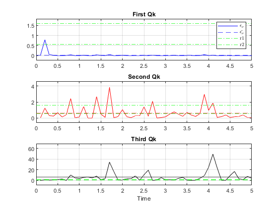

Contents
% Repeat Problem 3, except use the problem matrices and measurement data % that are defined by the Matlab script kf example02b.m. Notice that the R % and Q values are different for this problem and that there is a different % measurement time history. % Run your Kalman filter two additional times using the two alternate Q % values that are mentioned in the comments in the file kf example02b.m. % It is uncertain which is the correct Q value. clear; clc; close all; kf_example02b % Qk_a = Qk % Qk_b = first alternate Qk % Qk_c = second alternate Qk Gk = Gammak;
KALMAN FILTER
% Qk_a [xhat_a, P11_a, P22_a, P_a, xbar_a, Pbar_a, nu_a, S_a] = kf( ... xhat0, P0, zhist, Fk, Gk, Qk_a, Hk, Rk ); e_a = xbar_a - xhat_a; e_a_mean = mean(e_a); % Qk_b [xhat_b, P11_b, P22_b, P_b, xbar_b, Pbar_b, nu_b, S_b] = kf( ... xhat0, P0, zhist, Fk, Gk, Qk_b, Hk, Rk ); % Qk_c [xhat_c, P11_c, P22_c, P_c, xbar_c, Pbar_c, nu_c, S_c] = kf( ... xhat0, P0, zhist, Fk, Gk, Qk_c, Hk, Rk );
Decide which is the best value in the following way: Calculate err(ν(k))
for k = 1, 2, ..., 50 for each of your runs. Compute the average of these 50 values. This average times 50, i.e., {err_ν(1) + err_ν(2) + ... + err_ν(50)}, will be a sample of chi-square distribution of degree 50 if the filter model is correct. Develop upper and lower limits between which the average {err_ν(1) + err_ν(2) + ... + err_ν(50)}/50 must lie 99% of the time if the Kalman filter model is correct, and test your averages for each of the three candidate Q values. Which is the most reasonable? Look at the state estimate differences between the best filter and the other two filters.
% err_nu_k = 1/2 * [ nu_k ]' * inv(S_k) * nu_k for i = 1:length(nu_a) err_nu_a(i) = nu_a(i) * inv(S_a(i)) * nu_a(i); err_nu_b(i) = nu_b(i) * inv(S_b(i)) * nu_b(i); err_nu_c(i) = nu_c(i) * inv(S_c(i)) * nu_c(i); end err_nu_a_mean = mean(err_nu_a); err_nu_b_mean = mean(err_nu_b); err_nu_c_mean = mean(err_nu_c); N = 50; Nx = 2; Nz = 1; % NEED STATISTICS TOOLBOX a = .01; r1 = chi2inv( a/2, N * Nz) / N; r2 = chi2inv( 1 - a/2, N * Nz ) / N; figure subplot(3,1,1) plot( thist, err_nu_a, 'b' ); hold on; grid on; yline(err_nu_a_mean, 'b--'); yline(r1, 'g-.'); yline(r2, 'g-.'); bigger_ylim title('First Qk'); legend('$\epsilon_{\nu}$', '$\bar{\epsilon_{\nu}}$', 'r1', 'r2', 'interpreter', 'latex') subplot(3,1,2) plot( thist, err_nu_b, 'r'); yline(err_nu_b_mean, 'r--'); yline(r1, 'g-.'); yline(r2, 'g-.'); bigger_ylim title('Second Qk'); subplot(3,1,3) plot( thist, err_nu_c, 'k'); yline(err_nu_c_mean, 'k'); yline(r1, 'g--'); yline(r2, 'g--'); title('Third Qk') bigger_ylim xlabel('Time') if err_nu_a_mean > r1 && err_nu_a_mean < r2 sprintf('Qk = %g is reasonable', Qk_a) else sprintf('Qk = %g is NOT reasonable', Qk_a) end if err_nu_b_mean > r1 && err_nu_b_mean < r2 sprintf('Qk = %g is reasonable', Qk_b) else sprintf('Qk = %g is NOT reasonable', Qk_b) end if err_nu_c_mean > r1 && err_nu_c_mean < r2 sprintf('Qk = %g is reasonable', Qk_c) else sprintf('Qk = %g is NOT reasonable', Qk_c) end % possibly use Nz? Otherwise Q is not within bounds
ans =
'Qk = 40 is NOT reasonable'
ans =
'Qk = 0.4 is reasonable'
ans =
'Qk = 0.004 is NOT reasonable'
 Compute the RMS value of the difference time history
for each state vector element. Do the averaging over the last 40 points.
x1_rms_ab = rms( xhat_a(11:end,1) - xhat_b(11:end,1) ); x2_rms_ab = rms( xhat_a(11:end,2) - xhat_b(11:end,2) ); x1_rms_bc = rms( xhat_b(11:end,1) - xhat_c(11:end,1) ); x2_rms_bc = rms( xhat_b(11:end,2) - xhat_c(11:end,2) ); % Are these differences significant compared to the computed state % estimation error standard deviations for the best filter? x1_rms_ab / P11_b(end) x2_rms_ab / P22_b(end) x1_rms_bc / P11_b(end) x2_rms_bc / P22_b(end) disp('The second filter is the best filter. The first filter is closer to the second filter than the third filter is to the second filter');
ans =
68.0758727260931
ans =
15.8780431653489
ans =
1211.25919352871
ans =
86.8008602066569
The second filter is the best filter. The first filter is closer to the second filter than the third filter is to the second filter
subfunctions KALMAN FILTER
function [xhat_arr, Pxx_arr, Pzz_arr, P_cell, xbar_arr, Pbar_cell, nu_arr, S_arr] ... = kf( xhat0, P0, zhist, Fk, Gk, Qk, Hk, Rk ) % initialize for k = 0 xhat = xhat0; P = P0; % Initialize saved output arrays xbar_arr = [xhat']; Pbar_cell = {P}; xhat_arr = [xhat']; P_cell = {P}; Pxx_arr = [P(1,1)]; Pzz_arr = [P(2,2)]; nu_arr = []; S_arr = []; % Propagate and filter through all measurements for k = 0 : length(zhist)-1 % propagate state and covar xbar = Fk * xhat; % a priori state est Pbar = Fk * P * Fk' + Gk * Qk * Gk'; % a priori covar est % update nu = zhist(k+1) - Hk * xbar; % innovation S = Hk * Pbar * Hk' + Rk; % innovation covariance W = Pbar * Hk' * inv(S); % Kalman gain xhat = xbar + W * nu; % a posteriori state est P = Pbar - W * S * W'; % a posteriori covar est % next step k = k + 1; % save states and covariances xbar_arr = [xbar_arr; xbar']; Pbar_cell = {Pbar_cell; Pbar}; xhat_arr = [xhat_arr; xhat']; P_cell = {P_cell; P}; Pxx_arr = [Pxx_arr; P(1,1)]; Pzz_arr = [Pzz_arr; P(2,2)]; nu_arr = [nu_arr; nu]; S_arr = [S_arr; S]; end end